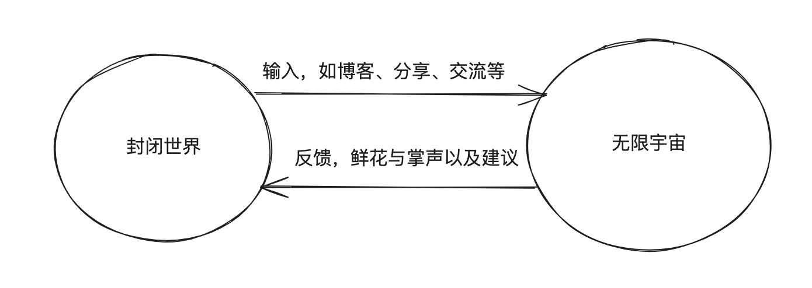

在各种武侠文化的渲染下，我从小萌生了一种奇怪的想法，就是弄任何事都要偷偷摸摸的钻研，最后惊艳所有人；因此无论是大学还是毕业工作中，很多事情都希望做到“完美”再同步给“外界”，如以下几个例子
- 学习SpringMVC，想说等学透了再输出文章博客
- 做某项任务，想说等拿到自己觉得合格的成果再同步给上级
- 做技术分享，由于想做得好一些，既要..又要..还要..等等，结果导致分享无限 … 但是以上种种最终都没有达到很好的效果，如何算学透？你永远都不会彻底准备好的，就像董宇辉说的，给你三年你准备不好高考，就算给你三十年也准备不好的，最好的方式是边学边输出博客，通过输出来反思自己所学的内容；拿到任务要定期汇报给上级，我们所生活的世界是一个错综复杂的体系，也许过了几天这个任务已经变得“不重要”了，你如果早点与上级汇报与沟通就会早点把更多精力投入到更有用的任务上，或者说在得到上级的帮助，你可以更加快速的攻克这个任务，再不济你也要让上级知道这些事情的进展等。以上种种思考的模式是一种单向的方式，个人认为是不太健康的，理想的情况下应该是一个螺旋环状的结构，如下图
通过上图可以看到，从开始到结束那么一长条线都是一条孤独的路，如果只是自己埋头从头到尾去做一件事很有可能是枯燥、痛苦的事，这会导致很多人中途放弃，这也是上面几个例子失败的最主要根因；因此再来看第二种方式，在有目标之后的第一件事是先将其拆分为独立的一个个小任务，每攻克一个小点时，我们都可以适当做下输出，无论是输出技术博客、还是技术分享或者是其他方式，在接受到“鲜花与掌声”后我们会拥有更多的动力对下一个“堡垒”发起进攻，在接受“鲜花与掌声”的同时，我们也能听到更多的反馈，例如可能会评论说你对IOC的某个理解是错误的、领导觉得你的这个方案一可能存在某个缺陷等等，那么在这个基础下，你在开启下一个环是有个更多的“注意事项”，这能让你更有条不紊的朝着最终目标前行。
除了大目标要进行拆分，我们也要重视外界反馈的“作用”，曾经我觉得别人的看法不重要，等自己把大目标做好了大家对你的看法自然而然的就会变好。这些也没错但是大部分人都是普通人，都是“俗人”，被人表扬会开心，收到点赞会兴奋，因此我们要合理的应用自己的“人性”的这个利器。不用害怕暴露自己，收到正向反馈就把它当作是“燃料”继续驱动自己朝着目标方向飞行，收到负面反馈就适当反思有没有需要调整的，如果不是就不用太过在意。下面是我绘制的“个体”与“外界”的关系图
封闭世界指的是我们每个人的内心世界，而无限宇宙指的是除了自身以外的一切事物。 封闭世界 优点
- 这个世界的任何东西只要你想可以随便改动
- 当进入心流状态时，你大脑会运转得飞快，一些困难点可以快速攻克以及快速弄明白很多知识点
缺点
- 孤独
- 偏执
无限宇宙 优点
- 反馈
缺点
- 嘈杂
- 过多无法改变的事物
通过简单比较并不是想表达哪个更优秀，而是我们个体应该跟这个世界“链接”起来，借用“无限宇宙”中强大的反馈能力驱动“封闭世界”，消除由于孤独带来的执行力低下，修正由于个体视角所带来的偏执，同时再利用好“封闭世界”的优点。可以让我们就像驱使一辆无限燃料的飞船，有条不紊的朝着我们梦想的星球飞去～